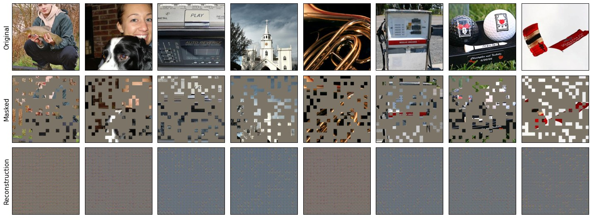
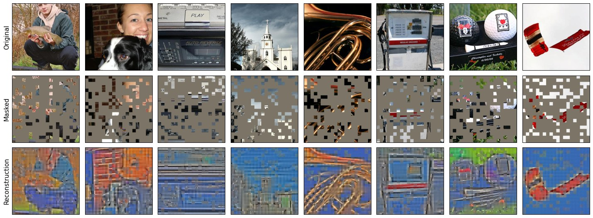
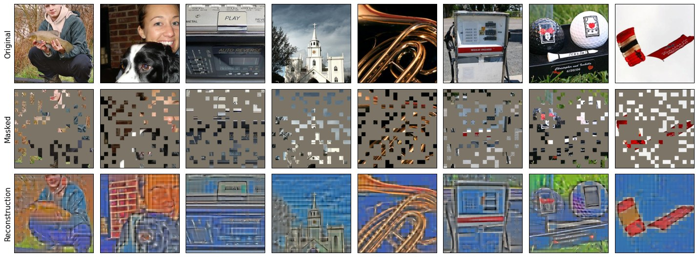
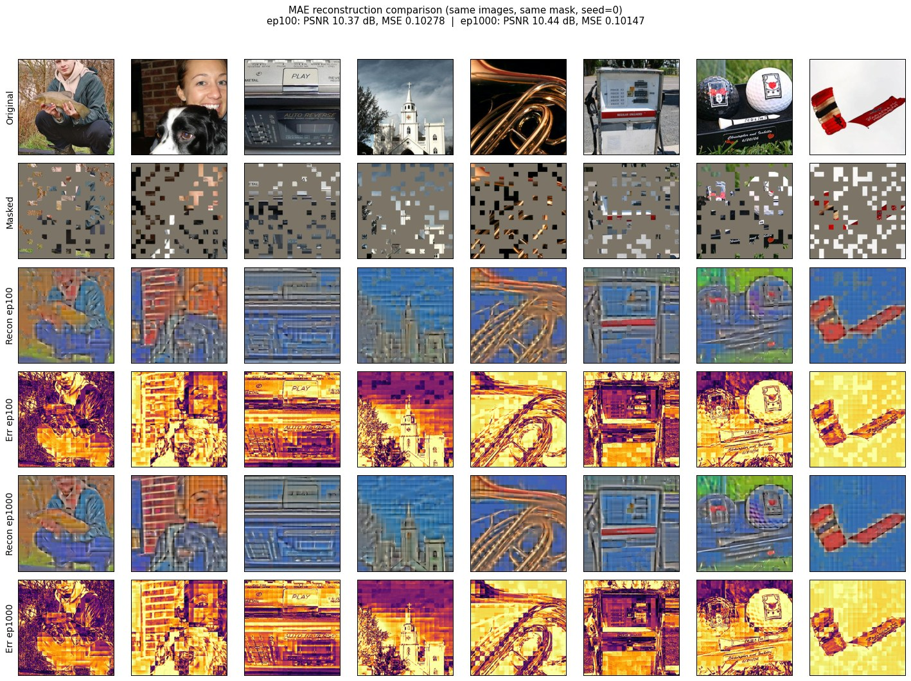
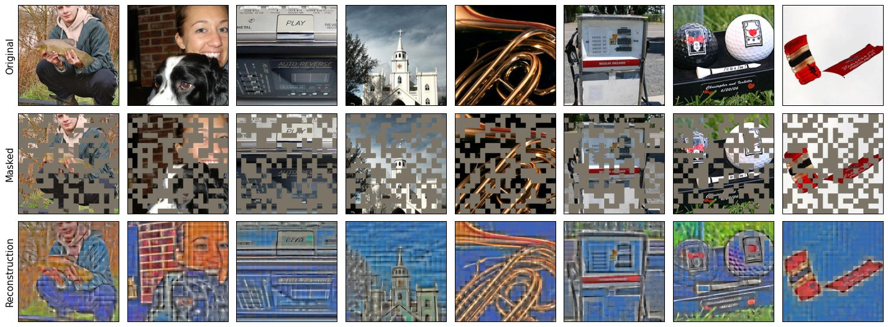
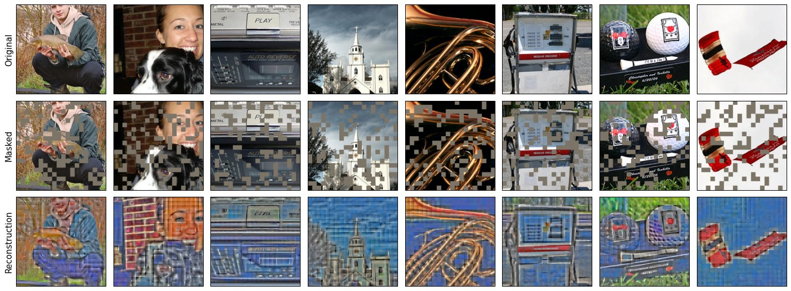
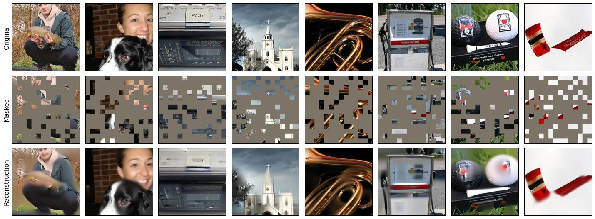

MAE：掩码自编码器是可扩展的视觉学习者
§1Motivation
BERT 证明了「随机遮住一部分、让模型猜」是 NLP 里可扩展的预训练范式，但它在视觉里的对应物长期没有定论。MAE 的答案朴素到令人怀疑：直接把图像随机遮掉 75%，让一个只看剩下 25% 的编码器和轻量解码器把遮住的像素画回来——不做离散化、不用对比学习、不需要任何标签，反而同时拿到了更好的精度和更快的训练。整套方法概括起来就是：非对称掩码自编码器——编码器只看 25% 可见 patch，轻量解码器在补全 mask token 的完整序列上重建像素，75% 高掩码率既逼出整体语义理解又把预训练算力省到四分之一。
1.1面临的问题和难点
视觉缺一个「BERT 时刻」
卷积时代没有天然 token，像素又连续、高冗余，掩码建模在视觉上长期被质疑：iGPT 把图像压成像素序列硬套 GPT，算力爆炸；BEiT 需要先训一个 dVAE 把 patch 离散化，两阶段、复杂、慢。
掩码率的多重身份
掩码率同时决定任务难度（遮太少→插值即可通过，学不到语义）、算力（编码器只算可见部分）、以及与图像冗余度的匹配。NLP 遮 15% 是甜点，视觉的甜点在哪是核心待解问题。
1.2别人是怎么解决的
| 路线 | 代表工作 | 做法 & 麻烦 |
|---|---|---|
| 像素序列自回归 | iGPT | 图像降采样成像素序列跑 GPT；序列长度平方级爆炸，只能用低分辨率，精度与效率双输。 |
| 离散 token 掩码建模 | BEiT | dVAE 把 patch 变成视觉词表再 BERT 式训练；依赖额外离散化器，两阶段训练，慢且引入词表上限。 |
| 对比学习 / 自蒸馏 | MoCo v3 · DINO | 实例判别或 teacher-student 一致性，当时是 ImageNet 自监督 SOTA；但范式上与「掩码建模」分道扬镳，且需要精心设计增广与正负样本。 |
1.3MAE 是怎么解决的
三个设计决定，每个都对应一条上面的麻烦。①非对称编解码：编码器是完整的 ViT 但只吃 25% 可见 patch——解码器负责在「可见 patch 编码 + 共享 mask token」拼成的完整序列上做重建，下游任务只用编码器，所以解码器可以又窄又浅，预训练的大头算力被掩码率直接砍掉。②75% 高掩码率：图像相邻 patch 高度冗余，遮 75% 之后插值糊弄不过去，模型必须理解物体级语义才能补全；同时编码器输入 token 数降到 1/4。③逐 patch 归一化像素当目标：不需要 tokenizer，norm-pix 目标让损失关注局部相对结构而非绝对亮度。没有一个组件需要新算子、新词表、新 teacher——「简单」本身就是结论的一部分。
1.4优点和效果
- 精度反超有监督：ViT-L 微调后 ImageNet-1k top-1 达 87.8%，比同结构有监督预训练高出 3 个点以上；线性探测 75.8%，ViT-H 到 76.0%。
- 训练显著更快：论文报告比 BEiT 一类方法快 3.5× 以上——高掩码率省编码器算力，轻解码器省重建算力，两头一起省。
- 范式可扩展：模型越大越受益，开启了视觉「预训练-微调」规模化路线；本站 MIM4D、UniPAD 正是「掩码 + 渲染解码器」把这套思想搬进驾驶 4D 场景的延伸。
- 复现预告见 §4：同样的 9.3× 算力差——ep100 vs ep1000 预训练，冻结线性探测 62.1% → 86.4%，全参微调 93.0% → 96.8%。
§2Architecture
2.1Overall Pipeline
整条链路只有五步：切 patch → 随机丢 75% → 编码可见 patch → 补 mask token 解码 → 逐 patch 回归像素。没有金字塔、没有多尺度、没有交叉注意力——一条纯 Transformer 直线。
| # | 阶段 | 代码位置 | 输出 shape | 说明 |
|---|---|---|---|---|
| 0 | 输入 | imgs | (B, 3, 320, 320) | 复现用 320px（20×20=400 个 patch） |
| 1 | Patch Embed | PatchEmbed: Conv2d(3→768, k=16, s=16) | (B, 400, 768) | 每个 16×16 patch 线性嵌入成 768 维 token |
| 2 | 随机掩码 | random_masking() | x (B,100,768), mask (B,400), ids_restore | 每样本独立：rand 噪声 argsort，前 100 保留；mask=1 表示被遮 |
| 3 | 编码器（ViT-B） | forward_encoder() | (B, 101, 768) | +固定 sin-cos pos_embed、cls token；12 × Block(768, 12 头)——只算 100 个可见 token |
| 4 | 投影 + 补 mask token | decoder_embed: Linear(768→512) | (B, 401, 512) | 共享 mask_token(1,1,512) 复制 300 份，与 100 个可见 token 拼接后按 ids_restore 恢复原顺序，再放回 cls |
| 5 | 解码器 | forward_decoder() | (B, 401, 512) | +decoder_pos_embed；8 × Block(512, 16 头) + LayerNorm |
| 6 | 重建头 | decoder_pred: Linear(512→768) | (B, 400, 768) | 每个 token 预测一个完整 patch 的 16×16×3 像素；去 cls |
| 7 | 损失 | forward_loss() | 标量 | MSE 只在 300 个被遮 patch 上平均（§3） |
2.2掩码策略：为什么是随机、为什么是 75%
掩码的实现只有五行：torch.rand(N, L) 生成噪声 → 按行 argsort → 前 100 个下标保留，其余丢弃。每个样本独立采样，同 batch 内没有两份相同的掩码。
两个看似随便的决定背后都有消融支撑：随机采样 > 块状/网格掩码——块状掩码遮住的是连续区域，模型靠局部外推就能糊弄过去；随机掩码把信息打成筛子，必须理解「这是什么物体」才能补全。75% 是甜点——论文的掩码率扫描里，线性探测与微调都在 75% 附近到峰：更低（40–50%）任务太容易、表征变差，更高（80%+）则信息不足、任务退化为猜谜。
2.3非对称编解码：两头省算力的关键
编码器：重，但只看 1/4
编码器就是标准 ViT（下游直接复用），但输入从 400 token 砍到 100 token。自注意力复杂度随序列长度平方下降，编码器算力大约省到 1/10–1/4；不需要任何稀疏算子，普通 ViT 直接生效。
解码器：轻，因为是一次性脚手架
解码器只在预训练存在，微调/探测时整个扔掉。所以它被设计成 512 宽、8 层（对比编码器 768 宽、12 层——宽深各缩到 2/3），对完整 400 token 序列做解码。消融显示：解码器加深到 8 层后线性探测收益趋平，微调几乎无感——「够用就好」。
两边加起来，就是论文「比 BEiT 快 3.5× 以上」的来源：高掩码率省编码算力 + 轻解码器省重建算力，而非依赖工程 trick。
2.4解码器与重建头：一个共享向量的魔法
被遮的 300 个位置填入的是同一个可学习向量 mask_token（std=0.02 初始化，shape (1,1,512)）——它们的区分度完全来自随后加上的位置编码 decoder_pos_embed（固定 sin-cos，不可训练）。也就是说，解码器拿到的是「这里有个洞、洞在哪、可见部分编码了什么」三样信息，重建内容全部由交叉注意从可见 token 里挖。重建头是最寒酸的一层 Linear(512→768)：把每个 token 直接映射回 16×16×3 像素——没有上采样、没有金字塔，patch 级回归一步到位。
§3Loss
代码实现与公式严格一致（forward_loss()）：先 patchify 拉平成 (B,400,768)，逐 patch 标准化，MSE 沿最后一维取均值得到每 patch 损失，再用 (loss * mask).sum() / mask.sum() 只对 mask=1 的位置平均——可见 patch 的重建输出被显式丢弃，不产生梯度。
| epoch | 0 | 100 | 300 | 500 | 700 | 1000 |
|---|---|---|---|---|---|---|
| recon loss | 1.3447 | 0.3996 | 0.3681 | 0.3563 | 0.3468 | 0.3408 |
§4Results
4.1论文主结果
| 模型 / 协议 | ImageNet-1k top-1 | 备注 |
|---|---|---|
| MAE ViT-L · 微调 | 87.8% | 超越同结构有监督预训练 3 个点以上 |
| MAE ViT-L · 线性探测 | 75.8% | 冻结编码器，只训分类头 |
| MAE ViT-H · 线性探测 | 76.0% | 更大模型继续受益——范式可扩展的直接证据 |
三个关键消融（曲线均在 75% 处到峰，此处不罗列具体数值）：掩码率扫描 40%–90%，线性探测与微调的最优点都在 75% 附近；采样策略上随机 > 块状 > 网格；目标函数上 norm-pix > raw pixel。训练效率上，论文报告比 BEiT 一类方法快 3.5× 以上。
4.2复现：预训练 0 → 1000 epoch，表征质量一路爬升
复现设置：ViT-B/16 @ 320px，ImageNette-320（10 类，9469 train / 3925 val），2×GPU 预训练 1000 epoch。一个工程细节：训练最初按 2000 epoch 的余弦调度启动，中途在 checkpoint-500 处以 EPOCHS=1001 重锚（MAE 的 lr 调度无状态、按 args.epochs 每步重算），使余弦在 epoch 1000 精确落地为 0——学习率轨迹连续且完整收敛。线性探测（冻结编码器，90 epoch）与全参微调（100 epoch，layer decay 0.65）分别在 epoch-100 与 epoch-1000 两个检查点上各跑一遍：
| 协议 | 初始化 | top-1 | top-5 |
|---|---|---|---|
| 线性探测 · 90ep | ckpt ep100 | 62.1% | 94.1% |
| 线性探测 · 90ep | ckpt ep1000 | 86.4% (+24.3) | 98.7% |
| 全参微调 · 100ep | ckpt ep100 | 93.0% | 99.5% |
| 全参微调 · 100ep | ckpt ep1000 | 96.8% (+3.8) | 99.7% |
两条协议的增益差（24.3 vs 3.8）与论文消融同构：冻结协议放大预训练差异，微调协议则相对鲁棒（论文中解码器深度消融呈现完全相同的模式）。复现在 0.8% 的数据量下仍然复现了这一结构，说明它不是大数据专属现象，而是两种评估协议的本质属性。
下面三张图是同一次预训练在 epoch 0 / 100 / 1000 的重建快照（每图 8 张验证图：原始 | 掩码 75% | 重建），训练进行中的可视化全部来自训练侧脚本自动渲染：



更严格的对比是同一批图、同一份掩码下两个检查点的并排（含误差热图），排除「每次随机掩码不同」带来的噪声：

4.3复现：掩码率与官方权重的直观对照
论文说「低掩码率任务太容易」——用 epoch-1000 的同一检查点，把推理时的掩码率从 75% 调到 50% / 25%，可以直观看到这句话的含义：


再和官方在 ImageNet-1k 上预训练 1600 epoch 的 ViT-L 放在一起看规模差距：

§5Conclusion
5.1这篇工作证明了什么
- 掩码 + 像素就够了：不需要离散化器（BEiT）、不需要像素序列自回归（iGPT）、不需要对比学习的精心设计，「遮住 75% 再重建归一化像素」这一句白话就是全部算法。
- 简单即可扩展：ViT-L→ViT-H 精度持续上升，训练还快 3.5×+——非对称结构让「大模型预训练」在视觉第一次变得经济。
- 掩码率是视觉 MIM 的第一超参：75% 的甜点由图像冗余度决定，这个视角直接影响了后续所有掩码建模工作。
5.2局限
- 均匀掩码 + 均匀像素损失：所有 patch 一视同仁，对检测/分割类密集预测任务不是最优——后续工作（如语义感知掩码）沿此展开。
- 评估协议敏感：本页复现显示同一对检查点在线性探测差 24.3 点、微调只差 3.8 点——引用 MAE 系数字时必须注明协议。
- 重建指标失真：重建损失与 PSNR 都难以反映表征质量（§3、§4.2），下游评估不可省。
5.3后续方向
MAE 之后，掩码建模迅速成为视觉预训练默认范式：视频版（VideoMAE、MAE-ST）把高冗余论断推广到时间维；面向具体模态的变体层出不穷。与本站主线最相关的是掩码 + 神经渲染路线——把「解码器重建像素」换成「解码器渲染 3D/4D 场景」，代表工作即 UniPAD（CVPR 2024）与 MIM4D（IJCV 2025）：掩码率、非对称编解码、逐 patch 回放这些 MAE 的核心设计被原样搬进驾驶场景，只是重建的目标从 2D 像素变成了多视角一致的 4D 表征。